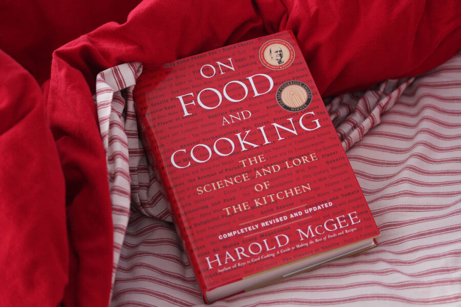

The Professional Chef by the Culinary Institute of America.
A textbook for the chef, this is an excellent source of fundamental techniques that every cook should know. From learning how to make a roux to essential information on safe food handling practices, this is one of those books that will continually come off the shelf when you’re in need of a quick refresher. In addition to being an excellent guide, it also has almost 1000 recipes that cover contemporary and classic recipes. No kitchen is complete without this book, and it’s often referred to as ’the bible’ by professional chefs. Click here to buy it today.
The Flavor Bible by Karen Page and Andrew Dornenburg
This is the most frequently used book on my kitchen shelf. It’s basically an encyclopedia of flavors and shows you what flavors work well with others. This book is best used by seasoned chefs and experienced home cooks, but it’s one that can be found on the steel counters of most professional kitchens. It is the winner of the 2009 James Beard Book Award for Best Book and is the number one reference book in my opinion. Click here to get your copy
Essentials of Classic Italian Cooking by Marcella Hazan
The most authentic Italian cookbook probably ever written, Marcella Hazan did for Italy what Julia Child did for France. An essential guide for everyone, this is one of the few cookbooks for beginners that even the most celebrated chefs rely on. If you enjoy classic Italian cooking, this is the only cookbook you’ll need. Click here to get one..
On Food and Cooking by Harold McGee
Hailed by Time magazine as “a minor masterpiece”, this cookbook is a classic staple every home cook needs on their shelf. The book focuses on teaching us where our food comes from and how to turn simple ingredients into something extraordinary. It’s inventive and addictive and a book you won’t be able to put down. Remarkably inspirational. Click here for a copy
Follow us: